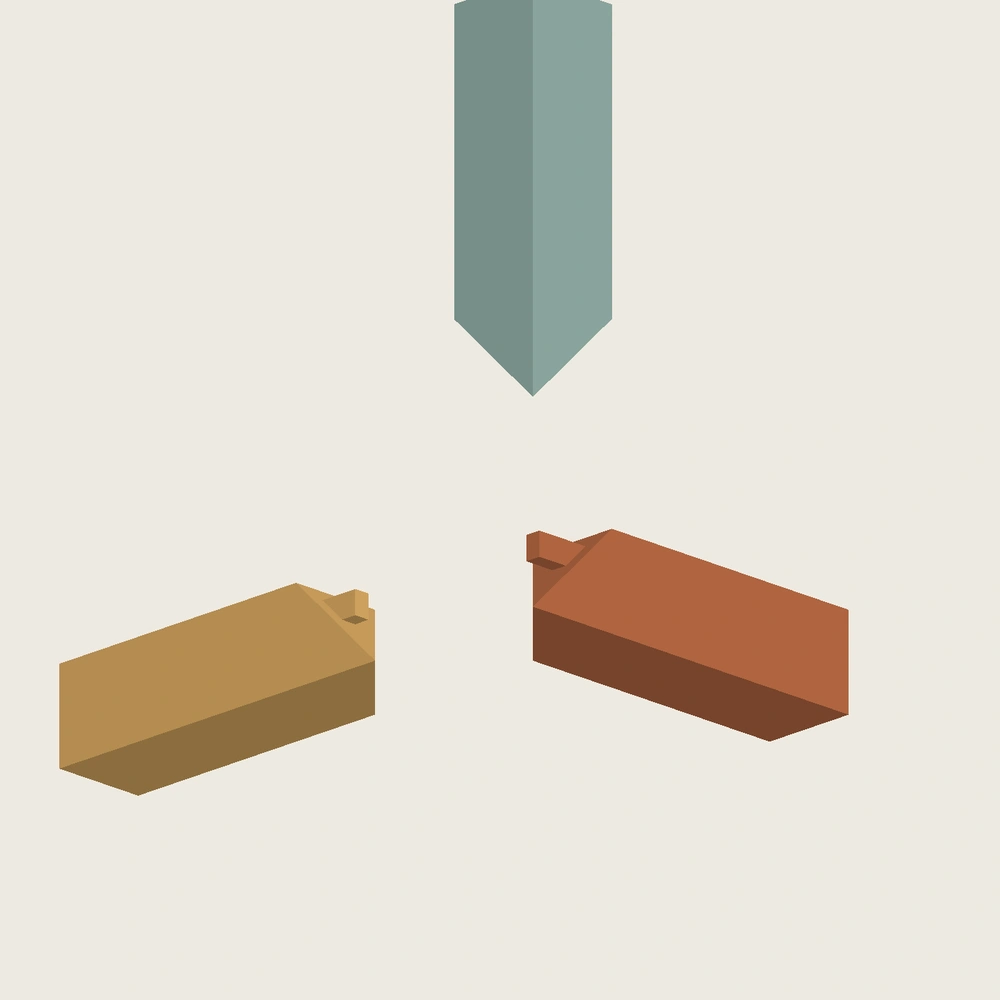

这一轮冻结的是教学变体
三根正交方材保留三向格角面；水平两件带独立长短榫区，Z 件接收它们。本轮建立开放入口母版及封闭入口负对照，各为 3 件原生实体、12 张完全约束草图。内部构造是为验证路径而设计的教学变体，不从三条外角线宣称唯一传统做法，也不宣称自锁。
模型沿 +X/+Y/+Z 展开，展示朝向不是家具摆放方向。原生母版、精确参数、STEP/STL 和交互网格留在本地；本页只展示静态图和非几何摘要，未同步 Onshape。
三向格角与内部榫区

选定路径通过，负对照失败在途中
选定顺序为 X 固定、Y 沿 −Y 接入，再让 Z 沿 −Z 接入。每段检查 49 个位置，步长 1 mm，并对边界面沿行程挤出所覆盖的扫掠集合逐一检查。两段均未发现体积相交，负越位对照产生预期干涉。
把 Z 槽入口封闭后，最终位置仍不重叠，但 Z 最后接入时发生碰撞。缺少的是路径，不是再把配合间隙增加一点。下表把其他顺序也列出，避免把某一条路径失败误写成整个节点无法装配。
| 安装顺序 | 开放入口 | 封闭入口对照 |
|---|---|---|
| X → Y → Z | 采样与边界面扫掠通过 | Z 接入碰撞 |
| Y → X → Z | 采样通过 | Z 接入碰撞 |
| X → Z → Y | 采样通过 | 采样发现碰撞 |
| Y → Z → X | 采样通过 | 采样发现碰撞 |
| Z → X → Y | 采样通过 | 采样通过 |
| Z → Y → X | 采样通过 | 采样通过 |
非选定顺序仅做离散采样，没有逐一完成边界面扫掠；因此保留“采样通过”的限定。开放方案有多种可行顺序，不具备唯一最后一件的几何锁定。
检查证据与未完成项
- 开放母版在独立进程重开后完成 4 次单参数修改与恢复；封闭对照重开复核；源文件字节未改变。
- 两套 STEP 与独立构造匹配，六份 STL 水密、绕向与包围盒检查通过。
- 本地开放方案 GLB 已解码检查 43 个显示位姿；按已验证顺序逆向拆开，退出件随后隐藏，表示移出操作区。
边界面扫掠只针对本轮刚体多面体、指定直线行程与数值相交阈值，不是全参数保证，也不是材料仿真。尖角保护、角线误差放大图、最小余料的打印表现、抗扭与循环拆装仍待完成；未通过 Gate A，不升级 PRINT_VERIFIED。